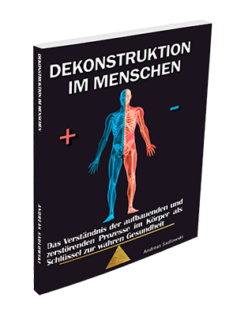

10.000+
Menschen begleitet
Die KSG H+ Methode verbindet körperliche, seelische und mentale Gesundheit zu einem ganzheitlichen System. Über 10.000 Menschen haben bereits den Weg zu echter, dauerhafter Gesundheit gefunden.
Echte Gesundheit entsteht nicht durch das Behandeln einzelner Symptome. Die KSG H+ Methode adressiert alle drei Ebenen gleichzeitig.
Autoimmunerkrankungen, Rheuma, Allergien, Hauterkrankungen und Unverträglichkeiten — der Körper hat die Fähigkeit zur Selbstheilung, wenn man ihm die richtigen Bedingungen gibt.
Innerer Frieden, emotionale Ausgeglichenheit und tiefes Wohlbefinden sind keine Zufälle — sie entstehen durch ein systematisches Fundament, das auf Universalgesetzen basiert.
Gedanken formen die Realität. Wer negative Gedankenmuster durchbricht und klare mentale Strukturen aufbaut, erlebt eine Freiheit, die körperliche Heilung erst möglich macht.
In diesem Video erklärt Andreas Sadlowski persönlich, wie Körper, Seele und Geist zusammenhängen — und warum konventionelle Medizin oft nur an der Oberfläche kratzt.

Das Standardwerk zur KSG H+ Methode. Andreas Sadlowski erklärt darin erstmals vollständig, wie Körper, Seele und Geist zusammenspielen — und wie jeder Mensch dieses System für sich nutzen kann.
Eine Reise jenseits von Murphy — in die Tiefe des Unterbewusstseins. Andreas Sadlowski zeigt, wie echte Wunscherfüllung funktioniert: ehrlich, ermutigend und lebensverändernd.
„Ich hatte 12 Jahre lang rheumatoide Arthritis und war überzeugt, damit leben zu müssen. Nach 4 Monaten mit der KSG H+ Methode sind meine Entzündungswerte normal — ohne Methotrexat."
„Das Buch hat mir endlich erklärt, warum mein Körper gegen sich selbst kämpft — und was ich dagegen tun kann. Endlich versteht jemand das große Bild."
„Ich war skeptisch gegenüber dem mentalen Teil. Aber genau dort lag mein Problem. Die Verbindung zwischen Stress, Emotionen und körperlicher Entzündung war mir nie so klar wie nach Andreas' Methode."
„Meine Haut ist das erste Mal seit 8 Jahren wieder frei von Ausbrüchen. Die KSG H+ Methode hat mir gezeigt, dass Haut immer ein Spiegel des Inneren ist."
„Ich kam wegen meiner Gelenke — und habe zusätzlich eine mentale Klarheit gefunden, die ich seit Jahren vermisst hatte. Alles hängt zusammen, und Andreas erklärt warum."
„Nach 30 Jahren Pollenallergie und unzähligen Antihistaminika bin ich seit einem Jahr beschwerdefrei. Das hätte ich nie für möglich gehalten."
KSG steht für Körper, Seele, Geist — und H+ für Höhere Gesundheit. Die Methode ist ein ganzheitliches System, das alle drei Ebenen des Menschseins adressiert. Sie basiert auf 20+ Jahren Forschung und der Begleitung tausender Menschen mit chronischen Erkrankungen.
Die KSG H+ Methode eignet sich für jeden Menschen, der dauerhaft gesund sein möchte — besonders für Menschen mit chronischen Erkrankungen wie Rheuma, Autoimmunerkrankungen, Allergien, Hauterkrankungen oder chronischer Erschöpfung, die mit konventionellen Ansätzen keine nachhaltige Lösung gefunden haben.
Nein. Die KSG H+ Methode ist ein ergänzender Ansatz und ersetzt keine medizinische Behandlung. Medikamente sollten nur in Absprache mit einem Arzt verändert werden. Viele Menschen berichten jedoch, dass sie nach Anwendung der Methode gemeinsam mit ihrem Arzt Medikamente reduzieren konnten.
Der beste Einstieg ist das Buch „Dekonstruktion im Menschen". Es erklärt das vollständige Fundament der KSG H+ Methode und gibt dir alle Werkzeuge an die Hand, um direkt anzufangen.
Das ist individuell verschieden. Viele Menschen berichten von ersten spürbaren Veränderungen nach 4–8 Wochen. Tiefgreifende, dauerhafte Veränderungen entstehen meist nach 3–6 Monaten konsequenter Anwendung.
Über 10.000 Menschen haben mit der KSG H+ Methode begonnen — und ihr Leben verändert. Das Buch ist der einfachste, direkteste Weg hinein.
Jetzt Buch bestellen →